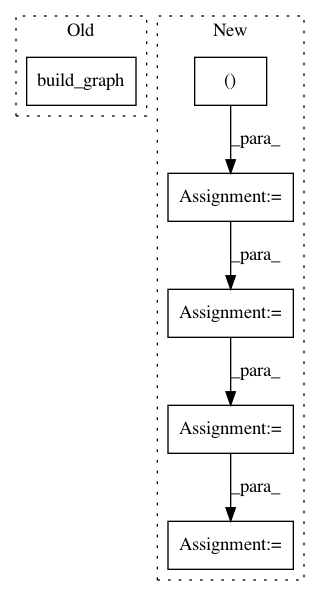

5b8864d1863ac0474db8b657f023341686f4b1fb,tests/autokeras/tuners/greedy_test.py,,test_greedy_oracle_populate_doesnt_crash_with_init_hps,#Any#,51
Before Change
@mock.patch("autokeras.tuners.greedy.GreedyOracle.get_best_trials")
def test_greedy_oracle_populate_doesnt_crash_with_init_hps(get_best_trials):
hp = kerastuner.HyperParameters()
graph = utils.build_graph()
graph.build(hp)
oracle = greedy.GreedyOracle(
initial_hps=task_specific.IMAGE_CLASSIFIER,
After Change
def test_greedy_oracle_populate_doesnt_crash_with_init_hps(get_best_trials):
hp = kerastuner.HyperParameters()
tf.keras.backend.clear_session()
input_node = ak.ImageInput(shape=(32, 32, 3))
input_node.batch_size = 32
input_node.num_samples = 1000
output_node = ak.ImageBlock()(input_node)
head = ak.ClassificationHead(num_classes=10)
head.output_shape = (10,)
output_node = head(output_node)
graph = ak.graph.Graph(inputs=input_node, outputs=output_node)
graph.build(hp)
oracle = greedy.GreedyOracle(
initial_hps=task_specific.IMAGE_CLASSIFIER,
In pattern: SUPERPATTERN
Frequency: 3
Non-data size: 6
Instances
Project Name: keras-team/autokeras
Commit Name: 5b8864d1863ac0474db8b657f023341686f4b1fb
Time: 2020-09-24
Author: jhfjhfj1@gmail.com
File Name: tests/autokeras/tuners/greedy_test.py
Class Name:
Method Name: test_greedy_oracle_populate_doesnt_crash_with_init_hps
Project Name: deepchem/deepchem
Commit Name: b68db1aaf6abe4d2cea8321cc6f1564228dd60f5
Time: 2019-05-31
Author: peastman@stanford.edu
File Name: deepchem/models/tensorgraph/IRV.py
Class Name: TensorflowMultitaskIRVClassifier
Method Name: __init__